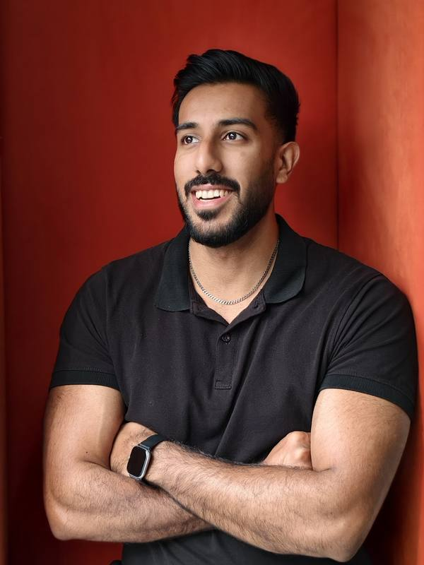

Move things around. Click a screen to open the project.
score = reach*.35 + volume*.25 + persistence*.25 + intensity*.15
if (contrast(brand) < 4.5) suggest(nearestShade(brand))
drift > 5.0 ? showMoveCard() : null
Product designer with a computer science degree. Here's what's in there.